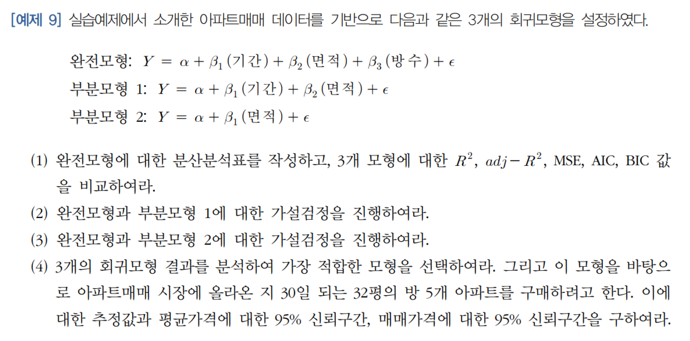
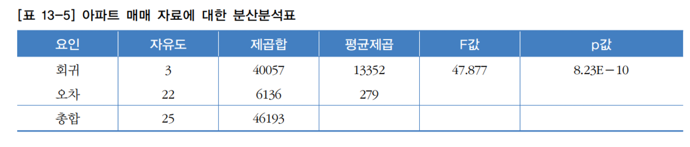
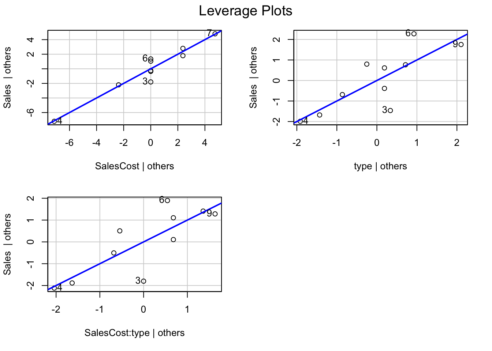

# 데이터 읽기 - 예제 8
rawdata = read_excel("data.xlsx")ch22_MLinearRegression
예제 8 - 다중회귀모형의 회귀방정식
(참고) 예제로 생성된 교재에서 사용한 데이터 내용
x1 x2 y
1 4 14 50.75980
2 1 16 41.39093
3 4 13 23.55423
4 5 19 62.02147
5 1 18 59.09995
6 7 18 77.93622
7 10 12 44.25575
8 4 14 58.86981
9 8 19 82.66984
10 10 13 79.87974# 다중회귀분석 진행 - 예제8
M4 = lm(y ~ x1 + x2,rawdata)
M4
Call:
lm(formula = y ~ x1 + x2, data = rawdata)
Coefficients:
(Intercept) x1 x2
-35.617 3.716 4.718 이를 회귀방정식으로 나타내면 다음과 같다.
\[\hat{y} = -35.617 + 3.716x_1 + 4.718x_2\]
예제 9 - 다중회귀모형의 분산분석표, 변수에 대한 가설검정

# 데이터 불러오기 - 예제 9
df1 = read_excel("아파트매매.xlsx", sheet='Data', range='B4:E30')
Note
R에서는 다중회귀모형에 대한 분산분석표(아래 그림 참고)를 제공하지 않는다. 그러므로, 완전 모형과 Null model간 검정을 이용하여 분산분석표를 작성한다.(Null model은 독립변수를 포함하지 않으므로 제곱합이 다중회귀 분석 모형의 SSE라 볼 수 있다. Null model과 Full model을 비교하는 F검정이 곧 전반검정 - ’모든 독립변수가 필요없다’는 귀무가설을 기각하는지 여부를 따지는 검정 - 이 된다.)

# 완전모형, 부분모형(Rooms 변수만 제외한 모형 - 1 , Area 변수만 사용하는 모형 - 2), null model
FullModel = lm(Sales ~ . , df1)
PartialModel1 = update(FullModel, .~.-Rooms)
PartialModel2 = lm(Sales ~ Area , df1)
NullModel = lm(Sales ~ 1 , df1)# 다중회귀모형 완전모형에 대한 분산분석표(각 회귀 계수에 대한 F 검정)
F1 = anova(FullModel); F1Analysis of Variance Table
Response: Sales
Df Sum Sq Mean Sq F value Pr(>F)
Dur 1 1615 1615 5.7892 0.02497 *
Area 1 38404 38404 137.7028 6.1e-11 ***
Rooms 1 38 38 0.1378 0.71404
Residuals 22 6136 279
---
Signif. codes: 0 '***' 0.001 '**' 0.01 '*' 0.05 '.' 0.1 ' ' 1
Note
여기서도 분산분석표를 만들 수 있다. Dur, Area, Rooms의 Sum of Square를 더하면 SSR이 된다. 이를 SSR의 자유도 3(k = 독립변수 갯수)으로 나누면 MSR이 된다.
# MSR 계산 - anova(Fullmodel) 활용
SSR = sum(F1[1:3,2])
MSR = SSR/3
MSR[1] 13352.23
Note
Residuals 의 Mean Square는 MSE에 해당한다. 앞에서 구한 MSR을 MSE로 나누면 F검정을 위한 F값이 만들어진다. 분자자유도 3, 분모자유도 22의 F분포를 이용하여 F검정을 진행할 수 있다.
# F검정 - anova(Fullmodel) 활용
Fvalue = MSR/F1[4,3]
Fvalue[1] 47.87661-pf(Fvalue,3,22) # p값 계산[1] 8.23094e-10# NullModel과 FullModel에 대한 비교 분산분석
anova(NullModel, FullModel)Analysis of Variance Table
Model 1: Sales ~ 1
Model 2: Sales ~ Dur + Area + Rooms
Res.Df RSS Df Sum of Sq F Pr(>F)
1 25 46192
2 22 6136 3 40057 47.877 8.231e-10 ***
---
Signif. codes: 0 '***' 0.001 '**' 0.01 '*' 0.05 '.' 0.1 ' ' 1
Note
여기서 NullModel의 RSS(Residual Sum of Squares)는 분산분석표의 SST가 된다.(NullModel에 의한 예측값은 실제값에 대해 아무것도 설명하고 있지 않기 때문에 RSS가 분산분석표의 SST와 같게 된다.) FullModel의 RSS는 오차 제곱합이므로 분산분석표의 SSE가 된다. 그러므로 Nullmodel과 Fullmodel의 RSS 차이는 SSR이 될 것이다. F-value는 MSR/MSE이므로 이는 앞서 확인한 SSR과 SSE를 자유도(3, 22)로 나눠서 그 비율을 확인하면 된다. 앞서 다른 방법의 계산결과와 동일한 F값과 p-value를 확인할 수 있다.
# r^2, adj r^2, MSE, AIC, BIC 확인(Fullmodel)
summary(FullModel)$r.squared[1] 0.8671737summary(FullModel)$adj.r.squared[1] 0.849061sigma(FullModel)^2 # MSE = 잔차 표준오차(잔차 표준편차를 자유도로 나눈 것)의 제곱 [1] 278.8884AIC(FullModel) [1] 225.8425BIC(FullModel)[1] 232.133# r^2, adj r^2, MSE, AIC, BIC 확인(Fullmodel)
# PartialModel1 = 기간 + 면적(Dur + Area)
summary(PartialModel1)$r.squared[1] 0.8663418summary(PartialModel1)$adj.r.squared[1] 0.8547193sigma(PartialModel1)^2[1] 268.4336AIC(PartialModel1)[1] 224.0048BIC(PartialModel1)[1] 229.0372# r^2, adj r^2, MSE, AIC, BIC 확인(PartialModel2)
# PartialModel2 = 면적(Area)
summary(PartialModel2)$r.squared[1] 0.821837summary(PartialModel2)$adj.r.squared[1] 0.8144135sigma(PartialModel2)^2[1] 342.9062AIC(PartialModel2)[1] 229.4776BIC(PartialModel2)[1] 233.2519
Note
위 결과로 봤을 때, AIC, BIC, MSE가 가장 작고 adj-R^2가 가장 높은 PartialModel1이 가장 적합한 모형으로 보인다.
FullModel과 PartialModel1의 차이는 Rooms 변수의 유무이다. FullModel의 Summary를 통해 Rooms의 t값을 통해 회귀계수의 통계적 유의성을 확인하여, 통계적으로 유의하지 않다면, Rooms가 없는 PartialModel1이 더 적합한 모형이라 할 수 있다.
# Rooms의 통계적 유의성 확인
summary(FullModel)
Call:
lm(formula = Sales ~ ., data = df1)
Residuals:
Min 1Q Median 3Q Max
-31.348 -11.449 0.434 9.301 33.519
Coefficients:
Estimate Std. Error t value Pr(>|t|)
(Intercept) 65.62718 18.82063 3.487 0.00209 **
Dur -0.16839 0.06147 -2.739 0.01197 *
Area 5.04363 0.62078 8.125 4.56e-08 ***
Rooms -2.01249 5.42161 -0.371 0.71404
---
Signif. codes: 0 '***' 0.001 '**' 0.01 '*' 0.05 '.' 0.1 ' ' 1
Residual standard error: 16.7 on 22 degrees of freedom
Multiple R-squared: 0.8672, Adjusted R-squared: 0.8491
F-statistic: 47.88 on 3 and 22 DF, p-value: 8.231e-10
Note
Rooms의 p-value는 0.71404로 귀무가설(Rooms의 계수 = 0)을 기각할 수 없다. 그러므로 Rooms는 통계적으로 유의하지 않은 독립변수이다. 이는 PartialModel1이 더 적합한 모형임을 뒷받침해준다.
Warning
이때 Rooms 변수를 제외한 것은 Rooms변수가 매매가격을 예측하는데 영향력이 없기 때문이 아니라, Area 변수가 이미 Rooms 변수가 설명하는 부분을 설명하고 있기 때문에, Rooms 변수가 추가적으로 설명할 부분이 없기 때문에 제외된 것이라고 해석해야 한다.
# PartialModel1을 이용한 30일된 32평 방 5개 아파트 가격 평균값의 95% 신뢰구간
predict(PartialModel1, newdata=data.frame(Dur=30, Area=32), interval="confidence") fit lwr upr
1 211.5292 196.8789 226.1795# PartialModel1을 이용한 30일된 32평 방 5개 아파트 가격의 95% 신뢰구간
predict(PartialModel1, newdata=data.frame(Dur=30, Area=32), interval="prediction") fit lwr upr
1 211.5292 174.6056 248.4528
Important
이 아파트는 2억1천1백만원 정도로 매매가격을 추정할 수 있다.
만일 매매가격이 2억 4천 8백만원이상 이면 이례적으로 비싼 가격(극단값)이라 판단할 수 있다.
반대로 1억 7천 5백만원 이하로 매매가 이루어지기는 어렵다고 볼 수 있다.
다중공선성
예제 10 - Singularity 문제
Note
높은 다중공선성을 가진 독립변수가 발견되면 모형에서 제거하는 것이 기본적인 해결방법이다. 하지만, 제거하는 이유가 종속변수 Y를 예측하는 데 중요한 변수가 아니기 때문에 제거하는 것이 아니라, 최소제곱법이 회귀분석결과를 안정적으로 제공하지 못하게 만들기 때문에 제거하는 것이다. - 데이터 사이언스 통계학, 이군희, 2023
# 완벽한 상관관계를 갖는 두 독립변수가 포함된 회귀 분석
x1=1:10
x2=21:30
y = 1 + 2*x1 + 3*x2 + rnorm(10, 0, 10)
M5 = lm(y ~ x1 + x2); summary(M5)
Call:
lm(formula = y ~ x1 + x2)
Residuals:
Min 1Q Median 3Q Max
-8.7686 -7.0445 -0.1041 3.6702 11.8471
Coefficients: (1 not defined because of singularities)
Estimate Std. Error t value Pr(>|t|)
(Intercept) 64.4545 5.5343 11.646 2.69e-06 ***
x1 4.3686 0.8919 4.898 0.0012 **
x2 NA NA NA NA
---
Signif. codes: 0 '***' 0.001 '**' 0.01 '*' 0.05 '.' 0.1 ' ' 1
Residual standard error: 8.101 on 8 degrees of freedom
Multiple R-squared: 0.7499, Adjusted R-squared: 0.7187
F-statistic: 23.99 on 1 and 8 DF, p-value: 0.001197
Note
Coefficients: (1 not defined because of singularities)
singularity 문제가 발생하여 x2에 대한 추정이 이루어지지 않았다.
Important
독립변수간에 높은 상관관계(상관계수의 절대값이 1에 가까운 경우)를 가지면 이러한 singularity 문제가 발생한다.
singularity 문제가 발생하지 않더라도 두 독립변수의 상관관계가 높으면 회귀분석에 의한 결과가 상당부분 왜곡되어 나타난다. 이를 다중공선성 문제라고 한다.
다중공선성 문제가 발생하면, 회귀계수\(b_j\)의 값이 불안정(회귀계수의 분산이 커진다 = 정확성이 떨어진다)하며 회귀계수 \(b_j\)의 표준오차 \(\hat{\sigma}(b_j)\)가 커져서 회귀계수의 p값이 크게 나타난다.(이러한 현상을 분산팽창(Variance Inflation)이라고 한다.)
Tip
회귀모형의 적합도는 괜찮지만, 회귀계수의 p값이 모두 크게 나타나 유의한 변수가 발견되지 않는 경우라면 다중공선성 문제를 생각해볼 수 있다.
다중공선성 검토
예제 11
# chart.Correlation 그래프를 통한 다중공선성 검토
PerformanceAnalytics::chart.Correlation(df1) Warning in par(usr): argument 1 does not name a graphical parameter
Warning in par(usr): argument 1 does not name a graphical parameter
Warning in par(usr): argument 1 does not name a graphical parameter
Warning in par(usr): argument 1 does not name a graphical parameter
Warning in par(usr): argument 1 does not name a graphical parameter
Warning in par(usr): argument 1 does not name a graphical parameter
Note
chart.correlation을 통해 Rooms와 Area에 높은 상관관계가 있음을 확인했다. 앞서 Rooms가 포함된 Fullmodel에서 Rooms의 회귀계수에 대한 t검정(부분검정)의 p값이 컸던 것을 보면, 왜곡된 결과를 내놓을 수 있기 때문에 다중공선성 문제가 있다고 보고 Rooms를 제외하는 것이 맞다.
Caution
반대로, Dur과 Area의 상관관계는 유의한 정도로 보이지만, Dur과 Area 두 변수만 포함된 Partialmodel1에서 두 변수는 모두 통계적으로 유의하고, 회귀계수의 부호 또한 설명 가능하기 때문에, 다중공선성의 문제는 발생하지 않았다고 보는게 합당하다.
# PartialModel1의 두 독립변수의 통계적 유의성 확인
summary(PartialModel1)
Call:
lm(formula = Sales ~ Dur + Area, data = df1)
Residuals:
Min 1Q Median 3Q Max
-30.392 -11.291 -0.187 9.193 34.303
Coefficients:
Estimate Std. Error t value Pr(>|t|)
(Intercept) 60.59166 12.79888 4.734 9.03e-05 ***
Dur -0.16590 0.05995 -2.767 0.011 *
Area 4.87233 0.40735 11.961 2.36e-11 ***
---
Signif. codes: 0 '***' 0.001 '**' 0.01 '*' 0.05 '.' 0.1 ' ' 1
Residual standard error: 16.38 on 23 degrees of freedom
Multiple R-squared: 0.8663, Adjusted R-squared: 0.8547
F-statistic: 74.54 on 2 and 23 DF, p-value: 8.891e-11분산팽창인자(Variance Inflation Factor,VIF)
분산팽창인자는 다음과 같다. \[VIF_j = \frac{1}{1-R_j^2}\]
\(R_j^2\)는 j번째 독립변수를 종속변수로 하고 나머지 독립변수로 회귀모형을 만들었을 때 회귀모형의 결정계수이다. 보통 VIF가 5보다 크면 다중공선성 문제를 의심하고 10보다 크면 심각하다고 판단한다. 하지만, 절대적인 기준은 없다.
# vif 확인 - Full, PartialModel1
car::vif(FullModel) Dur Area Rooms
1.225876 2.707717 2.387637 car::vif(PartialModel1) Dur Area
1.211306 1.211306
Note
Rooms 변수는 위에서는 다중공선성 문제 때문에 제외했지만 VIF만 봤을 때에는 5보다 작기 때문에 다중공선성 문제가 있다고 의심하기 어렵다. 이 예제를 통해, VIF가 5보다 작더라도 다중공선성문제가 생길 수 있음을 명심해야 한다.
다음 예제
매출액 영업활동비용 영업사원수 (억원) (천만원) (명)
Sales SalesCost NSalesMan 22 8 6 23 10 7 18 7 5 9 2 2 14 4 3 20 6 4 21 7 4 18 6 3 16 4 3 19 6 3
# 다음 예제 데이터 불러오기
da2= read_excel("./Salesdata.xlsx")# Sales를 추정하는 다중회귀분석
M5 = lm(Sales ~ SalesCost + NSalesMan, data=da2)
summary(M5)
Call:
lm(formula = Sales ~ SalesCost + NSalesMan, data = da2)
Residuals:
Min 1Q Median 3Q Max
-1.5965 -1.2602 -0.1608 1.1506 2.0000
Coefficients:
Estimate Std. Error t value Pr(>|t|)
(Intercept) 7.9181 1.4498 5.462 0.000944 ***
SalesCost 2.3626 0.5496 4.299 0.003571 **
NSalesMan -1.0234 0.7947 -1.288 0.238745
---
Signif. codes: 0 '***' 0.001 '**' 0.01 '*' 0.05 '.' 0.1 ' ' 1
Residual standard error: 1.532 on 7 degrees of freedom
Multiple R-squared: 0.8947, Adjusted R-squared: 0.8646
F-statistic: 29.73 on 2 and 7 DF, p-value: 0.0003794# da2의 각변수의 상관관계 확인
signif(cor(da2),3) Sales SalesCost NSalesMan
Sales 1.000 0.933 0.785
SalesCost 0.933 1.000 0.912
NSalesMan 0.785 0.912 1.000Assumption 1 : Model Specification Error Check (Linearity) 선형성 가정 확인
# crPlot 사용하여 선형성 확인
crPlots(M5) # Evaluate Nonlinearity: component + residual plot 
# Same as 'Partial Residual Plot' (xi) versus (bi xi + residual)# ceresPlots 사용하여 선형성 확인
ceresPlots(M5) # Ceres plots: Conditional Expectation Partial ResidualsWarning in simpleLoess(y, x, w, span, degree = degree, parametric = parametric,
: pseudoinverse used at 6Warning in simpleLoess(y, x, w, span, degree = degree, parametric = parametric,
: neighborhood radius 2Warning in simpleLoess(y, x, w, span, degree = degree, parametric = parametric,
: reciprocal condition number 4.179e-17Warning in simpleLoess(y, x, w, span, degree = degree, parametric = parametric,
: There are other near singularities as well. 4Warning in simpleLoess(y, x, w, span, degree = degree, parametric = parametric,
: pseudoinverse used at 1.975Warning in simpleLoess(y, x, w, span, degree = degree, parametric = parametric,
: neighborhood radius 2.025Warning in simpleLoess(y, x, w, span, degree = degree, parametric = parametric,
: reciprocal condition number 9.0499e-17Warning in simpleLoess(y, x, w, span, degree = degree, parametric = parametric,
: There are other near singularities as well. 1
CeresPlot은
Caution
SalesCost와 Ceres 잔차를 보면 선형적으로 증가하는 관계를 보인다. 이는 Sales를 예측함에 있어서 SalesCost가 비선형적인 관계여야할지도 모른다는 점을 암시한다.
이에반해 NSalesMan은 Ceres 잔차와 특별한 관계가 없어보인다. 이는 NSalesMan이 Sales를 예측함에 있어서 선형적인 관계가 맞다는 것을 보여준다.
Evaluate Collinearity 다중 공선성 확인
# vif 확인
vif(M5) # variance inflation factors SalesCost NSalesMan
5.918129 5.918129 # partialmodel과 fullmodel 비교 분산분석
M6 = lm(Sales ~ SalesCost, data=da2) # Partial Model
anova(M5, M6)Analysis of Variance Table
Model 1: Sales ~ SalesCost + NSalesMan
Model 2: Sales ~ SalesCost
Res.Df RSS Df Sum of Sq F Pr(>F)
1 7 16.433
2 8 20.326 -1 -3.8933 1.6585 0.2387
Note
SalesCost와 NSalesMan 변수 두개 다 있을 때 RSS(잔차 제곱합)이 더 작다. 그러나 이에 대한 F값의 p-value를 봤을 때 통계적으로 유의하게 작다고 판단하긴 어렵다.(유의수준 5%에서 생각했을 때)
# 회귀모형 잔차분석
layout(matrix(c(1,2,3,4),2,2)) # optional 4 graphs/page
# same as 'par(mfrow=c(2,2))'
plot(M6)
Note
왼쪽 위부터 시계방향으로 선형성 확인(모델 적합도), 등분산성 확인, 영향점 확인, 정규성 확인
QQ플롯은 정규성을 검정하는데 사용한다.가운데 점선 직선은 이론적인 정규분포일 때 데이터가 위치하는 곳을 뜻한다.
Assumption Check in the Regression Model
# gvlma - 일반화된 선형회귀 방정식의 가정에 대한 적절성 확인
gvlma(M6)
Call:
lm(formula = Sales ~ SalesCost, data = da2)
Coefficients:
(Intercept) SalesCost
7.696 1.717
ASSESSMENT OF THE LINEAR MODEL ASSUMPTIONS
USING THE GLOBAL TEST ON 4 DEGREES-OF-FREEDOM:
Level of Significance = 0.05
Call:
gvlma(x = M6)
Value p-value Decision
Global Stat 5.9858 0.20021 Assumptions acceptable.
Skewness 0.1031 0.74820 Assumptions acceptable.
Kurtosis 0.8291 0.36253 Assumptions acceptable.
Link Function 4.8480 0.02768 Assumptions NOT satisfied!
Heteroscedasticity 0.2056 0.65021 Assumptions acceptable.
Note
Link function에 문제가 있다면 모형의 적합성 문제 즉, 선형성이 아닐수도 있음을 암시한다.
# durbin watson 더빈 왓슨 검정 - 잔차 독립성 검정
car::durbinWatsonTest(M6) lag Autocorrelation D-W Statistic p-value
1 0.4863985 0.9622878 0.056
Alternative hypothesis: rho != 0귀무가설이 상관관계= 0이므로 p값이 충분히 높으면 독립성을 만족한다고 판단할 수 있다.
# ncv test 등분산성 검정
car::ncvTest(M6)Non-constant Variance Score Test
Variance formula: ~ fitted.values
Chisquare = 0.03595083, Df = 1, p = 0.84962귀무가설은 잔차가 등분산성을 가진다 이므로 p값이 충분히 높으면 등분산성을 만족한다고 판단할 수 있다.
# shapiro 검정 - 정규성 검정
shapiro.test(residuals(M6))
Shapiro-Wilk normality test
data: residuals(M6)
W = 0.91587, p-value = 0.3238귀무가설은 잔차가 정규성을 가진다 이므로 p값이 충분히 높으면 정규성을 만족한다고 판단할 수 있다.
# 산점도를 통한 영향점 확인
par(mfrow=c(1,1),family = "AppleGothic")
plot(da2$SalesCost, da2$Sales, pch=20, cex=1.2, xlab='영업활동비용',
ylab='매출액', main='영업활동비용과 매출액 관계')
abline(M6, lwd=2)
Regression with Dummy variables (Chapter 22) 더미변수
# 더미변수 이용한 회귀분석 예제 데이터 불러오기
type=c("할인점","할인점","할인점","일반점","일반점",
"할인점","일반점","일반점","할인점","일반점")
da3=cbind(da2, as.factor(type))
#da2는 앞서 사용했던, Sales, SalesCost, NSalesMan 변수로 이루어진 데이터프레임이다.# model3 - 평행성(parallel)을 가정하지 않고 더미변수와 메트릭 변수가 있는 다중회귀분석
#평행성이 없다는 건 더미변수와 메트릭 변수의 상호작용효과가 있다는 뜻이다.
model3 = lm(Sales ~ SalesCost*type, data=da3) # Without Parallel
summary(model3)
Call:
lm(formula = Sales ~ SalesCost * type, data = da3)
Residuals:
Min 1Q Median 3Q Max
-1.8000 -0.3250 -0.0125 0.3625 1.3500
Coefficients:
Estimate Std. Error t value Pr(>|t|)
(Intercept) 4.3250 1.4237 3.038 0.022865 *
SalesCost 2.3750 0.2681 8.859 0.000115 ***
type할인점 7.4250 2.2526 3.296 0.016487 *
SalesCost:type할인점 -1.2250 0.3597 -3.406 0.014394 *
---
Signif. codes: 0 '***' 0.001 '**' 0.01 '*' 0.05 '.' 0.1 ' ' 1
Residual standard error: 1.072 on 6 degrees of freedom
Multiple R-squared: 0.9558, Adjusted R-squared: 0.9337
F-statistic: 43.22 on 3 and 6 DF, p-value: 0.0001861# model4 - 평행성(parallel)을 가정하고 더미변수와 메트릭 변수가 있는 다중회귀분석
# 더미변수와 메트릭 변수의 상호작용효과가 없는 경우에 해당한다.
model4 = lm(Sales ~ SalesCost+type, data=da3) # With Parallel
summary(model4)
Call:
lm(formula = Sales ~ SalesCost + type, data = da3)
Residuals:
Min 1Q Median 3Q Max
-2.1167 -1.4764 0.3056 1.2389 1.8944
Coefficients:
Estimate Std. Error t value Pr(>|t|)
(Intercept) 7.7278 1.6081 4.805 0.001954 **
SalesCost 1.6944 0.2834 5.979 0.000554 ***
type할인점 0.2111 1.2156 0.174 0.867045
---
Signif. codes: 0 '***' 0.001 '**' 0.01 '*' 0.05 '.' 0.1 ' ' 1
Residual standard error: 1.7 on 7 degrees of freedom
Multiple R-squared: 0.8703, Adjusted R-squared: 0.8332
F-statistic: 23.48 on 2 and 7 DF, p-value: 0.0007865두 결과를 비교해보면 상호작용을 고려한 model3의 \(adj-R^2\)가 0.9337로 model4의 \(adj-R^2\)(0.8332)보다 훨씬 좋다. 또한 상호작용항의 통계적 유의성도 있는 것으로 나타나기 때문에 평행성 가정을 하지 않은 회귀모형의 성능이 뛰어난 것으로 판단할 수 있다.
Estimate Std. Error t value Pr(>|t|)
SalesCost:type할인점 -1.2250 0.3597 -3.406 0.014394 * Model Building: Variable Selection (Chapter 22)
Selecting a subset of X variables (or predictor) from a larger set (e.g., stepwise selection) is a controversial topic. You can perform stepwise selection (forward, backward, both) using the stepAIC( ) function from the MASS package. Selection of terms for deletion or inclusion is based on AIC (Akaike’s information criterion). R defines AIC as
-2 maximized log-likelihood + 2 number of parametersstepAIC( ) performs stepwise model selection by exact AIC.
Stepwise Regression 단계별 선택법(변수추가법 + 변수제거법)
# model selection - 단계별 선택법
model5 = lm(Sales ~ SalesCost*NSalesMan*type, data=da3)
step <- stepAIC(model5, direction="both")Start: AIC=12.08
Sales ~ SalesCost * NSalesMan * type
Df Sum of Sq RSS AIC
- SalesCost:NSalesMan:type 1 0.0011818 6.7598 10.084
<none> 6.7586 12.082
Step: AIC=10.08
Sales ~ SalesCost + NSalesMan + type + SalesCost:NSalesMan +
SalesCost:type + NSalesMan:type
Df Sum of Sq RSS AIC
- SalesCost:NSalesMan 1 0.054483 6.8143 8.1644
- NSalesMan:type 1 0.079042 6.8388 8.2003
- SalesCost:type 1 0.158662 6.9185 8.3161
<none> 6.7598 10.0841
+ SalesCost:NSalesMan:type 1 0.001182 6.7586 12.0823
Step: AIC=8.16
Sales ~ SalesCost + NSalesMan + type + SalesCost:type + NSalesMan:type
Df Sum of Sq RSS AIC
- NSalesMan:type 1 0.084734 6.8990 6.2879
- SalesCost:type 1 0.221612 7.0359 6.4844
<none> 6.8143 8.1644
+ SalesCost:NSalesMan 1 0.054483 6.7598 10.0841
Step: AIC=6.29
Sales ~ SalesCost + NSalesMan + type + SalesCost:type
Df Sum of Sq RSS AIC
- NSalesMan 1 0.0010 6.9000 4.2894
<none> 6.8990 6.2879
+ NSalesMan:type 1 0.0847 6.8143 8.1644
+ SalesCost:NSalesMan 1 0.0602 6.8388 8.2003
- SalesCost:type 1 4.4193 11.3183 9.2384
Step: AIC=4.29
Sales ~ SalesCost + type + SalesCost:type
Df Sum of Sq RSS AIC
<none> 6.900 4.2894
+ NSalesMan 1 0.001 6.899 6.2879
- SalesCost:type 1 13.339 20.239 13.0502step$anova # display resultsStepwise Model Path
Analysis of Deviance Table
Initial Model:
Sales ~ SalesCost * NSalesMan * type
Final Model:
Sales ~ SalesCost + type + SalesCost:type
Step Df Deviance Resid. Df Resid. Dev AIC
1 2 6.758621 12.082337
2 - SalesCost:NSalesMan:type 1 0.0011818491 3 6.759803 10.084086
3 - SalesCost:NSalesMan 1 0.0544831755 4 6.814286 8.164362
4 - NSalesMan:type 1 0.0847338936 5 6.899020 6.287942
5 - NSalesMan 1 0.0009803922 6 6.900000 4.289363A little more investigation in R
# pairs() - 변수간 관계를 볼 수 있는 산점도
pairs(da2)%20-%20변수간%20관계를%20볼%20수%20있는%20산점도-1.png)
# model selection - 변수제거법
step(model5, direction="backward")Start: AIC=12.08
Sales ~ SalesCost * NSalesMan * type
Df Sum of Sq RSS AIC
- SalesCost:NSalesMan:type 1 0.0011818 6.7598 10.084
<none> 6.7586 12.082
Step: AIC=10.08
Sales ~ SalesCost + NSalesMan + type + SalesCost:NSalesMan +
SalesCost:type + NSalesMan:type
Df Sum of Sq RSS AIC
- SalesCost:NSalesMan 1 0.054483 6.8143 8.1644
- NSalesMan:type 1 0.079042 6.8388 8.2003
- SalesCost:type 1 0.158662 6.9185 8.3161
<none> 6.7598 10.0841
Step: AIC=8.16
Sales ~ SalesCost + NSalesMan + type + SalesCost:type + NSalesMan:type
Df Sum of Sq RSS AIC
- NSalesMan:type 1 0.084734 6.8990 6.2879
- SalesCost:type 1 0.221612 7.0359 6.4844
<none> 6.8143 8.1644
Step: AIC=6.29
Sales ~ SalesCost + NSalesMan + type + SalesCost:type
Df Sum of Sq RSS AIC
- NSalesMan 1 0.0010 6.900 4.2894
<none> 6.899 6.2879
- SalesCost:type 1 4.4193 11.318 9.2384
Step: AIC=4.29
Sales ~ SalesCost + type + SalesCost:type
Df Sum of Sq RSS AIC
<none> 6.900 4.2894
- SalesCost:type 1 13.339 20.239 13.0502
Call:
lm(formula = Sales ~ SalesCost + type + SalesCost:type, data = da3)
Coefficients:
(Intercept) SalesCost type할인점
4.325 2.375 7.425
SalesCost:type할인점
-1.225 # model selection - 변수추가법(null model과 scope를 지정하고)
scope = formula(~SalesCost*NSalesMan*type)
null = lm(Sales ~ 1, data=da3)
step(null, scope, direction="forward")Start: AIC=29.47
Sales ~ 1
Df Sum of Sq RSS AIC
+ SalesCost 1 135.674 20.326 11.093
+ NSalesMan 1 96.182 59.818 21.887
+ type 1 32.400 123.600 29.145
<none> 156.000 29.473
Step: AIC=11.09
Sales ~ SalesCost
Df Sum of Sq RSS AIC
+ NSalesMan 1 3.8933 16.433 10.967
<none> 20.326 11.093
+ type 1 0.0872 20.239 13.050
Step: AIC=10.97
Sales ~ SalesCost + NSalesMan
Df Sum of Sq RSS AIC
+ SalesCost:NSalesMan 1 5.8103 10.622 8.6038
+ type 1 5.1144 11.318 9.2384
<none> 16.433 10.9669
Step: AIC=8.6
Sales ~ SalesCost + NSalesMan + SalesCost:NSalesMan
Df Sum of Sq RSS AIC
<none> 10.6224 8.6038
+ type 1 1.6549 8.9675 8.9102
Call:
lm(formula = Sales ~ SalesCost + NSalesMan + SalesCost:NSalesMan,
data = da3)
Coefficients:
(Intercept) SalesCost NSalesMan
1.7029 2.8637 1.5093
SalesCost:NSalesMan
-0.2573 # model selection - 단계별 선택법(null model과 scope를 지정하고)
step(null, scope, direction="both")Start: AIC=29.47
Sales ~ 1
Df Sum of Sq RSS AIC
+ SalesCost 1 135.674 20.326 11.093
+ NSalesMan 1 96.182 59.818 21.887
+ type 1 32.400 123.600 29.145
<none> 156.000 29.473
Step: AIC=11.09
Sales ~ SalesCost
Df Sum of Sq RSS AIC
+ NSalesMan 1 3.893 16.433 10.967
<none> 20.326 11.093
+ type 1 0.087 20.239 13.050
- SalesCost 1 135.674 156.000 29.473
Step: AIC=10.97
Sales ~ SalesCost + NSalesMan
Df Sum of Sq RSS AIC
+ SalesCost:NSalesMan 1 5.810 10.622 8.6038
+ type 1 5.114 11.318 9.2384
<none> 16.433 10.9669
- NSalesMan 1 3.893 20.326 11.0932
- SalesCost 1 43.385 59.818 21.8872
Step: AIC=8.6
Sales ~ SalesCost + NSalesMan + SalesCost:NSalesMan
Df Sum of Sq RSS AIC
<none> 10.6224 8.6038
+ type 1 1.6549 8.9675 8.9102
- SalesCost:NSalesMan 1 5.8103 16.4327 10.9669
Call:
lm(formula = Sales ~ SalesCost + NSalesMan + SalesCost:NSalesMan,
data = da3)
Coefficients:
(Intercept) SalesCost NSalesMan
1.7029 2.8637 1.5093
SalesCost:NSalesMan
-0.2573 # predict() 이용하여 추정값 및 신뢰구간 구하기
model7=lm(Sales ~ SalesCost*NSalesMan, data=da3)
predict(model7, list(SalesCost=c(4,8), NSalesMan=c(3,6)), interval="conf") fit lwr upr
1 14.59756 13.06810 16.12703
2 21.31628 19.24699 23.38557# SalesCost = 4이고, NSalesMan이 3일때, Sales의 추정값과 95% 신뢰구간
# SalesCost = 8이고, NSalesMan이 6일때, Sales의 추정값과 95% 신뢰구간# model7의 summary
summary(model7)
Call:
lm(formula = Sales ~ SalesCost * NSalesMan, data = da3)
Residuals:
Min 1Q Median 3Q Max
-2.2886 -0.5531 0.1637 0.6176 1.4024
Coefficients:
Estimate Std. Error t value Pr(>|t|)
(Intercept) 1.7029 3.6545 0.466 0.65768
SalesCost 2.8637 0.5516 5.191 0.00203 **
NSalesMan 1.5093 1.5591 0.968 0.37040
SalesCost:NSalesMan -0.2573 0.1420 -1.812 0.12001
---
Signif. codes: 0 '***' 0.001 '**' 0.01 '*' 0.05 '.' 0.1 ' ' 1
Residual standard error: 1.331 on 6 degrees of freedom
Multiple R-squared: 0.9319, Adjusted R-squared: 0.8979
F-statistic: 27.37 on 3 and 6 DF, p-value: 0.0006727# scale()를 이용하여 데이터를 표준화(Standardized)하고 회귀분석 - model7S
model7S=lm(scale(Sales) ~ scale(SalesCost)*scale(NSalesMan),data=da3)
summary(model7S)
Call:
lm(formula = scale(Sales) ~ scale(SalesCost) * scale(NSalesMan),
data = da3)
Residuals:
Min 1Q Median 3Q Max
-0.54971 -0.13284 0.03932 0.14835 0.33685
Coefficients:
Estimate Std. Error t value Pr(>|t|)
(Intercept) 0.17925 0.14143 1.267 0.2520
scale(SalesCost) 0.99610 0.30370 3.280 0.0168 *
scale(NSalesMan) -0.01303 0.33041 -0.039 0.9698
scale(SalesCost):scale(NSalesMan) -0.21848 0.12060 -1.812 0.1200
---
Signif. codes: 0 '***' 0.001 '**' 0.01 '*' 0.05 '.' 0.1 ' ' 1
Residual standard error: 0.3196 on 6 degrees of freedom
Multiple R-squared: 0.9319, Adjusted R-squared: 0.8979
F-statistic: 27.37 on 3 and 6 DF, p-value: 0.0006727표준화하고 회귀분석한 결과와 그렇지 않은 결과의 \(adj-R^2\)는 같다. 그러나, 각 회귀계수의 통계적 유의성은 변동이 있었다.
All subset Regression (Extra topic)
Alternatively, you can perform all-subsets regression using the leaps() function from the leaps package. In the following code nbest indicates the number of subsets of each size to report. Here, the ten best models will be reported for each subset size (1 predictor, 2 predictors, etc.).
leaps=regsubsets(Sales~SalesCost*NSalesMan*type, data=da3, nbest=2)
summary(leaps) # view results Subset selection object
Call: regsubsets.formula(Sales ~ SalesCost * NSalesMan * type, data = da3,
nbest = 2)
7 Variables (and intercept)
Forced in Forced out
SalesCost FALSE FALSE
NSalesMan FALSE FALSE
type할인점 FALSE FALSE
SalesCost:NSalesMan FALSE FALSE
SalesCost:type할인점 FALSE FALSE
NSalesMan:type할인점 FALSE FALSE
SalesCost:NSalesMan:type할인점 FALSE FALSE
2 subsets of each size up to 7
Selection Algorithm: exhaustive
SalesCost NSalesMan type할인점 SalesCost:NSalesMan
1 ( 1 ) "*" " " " " " "
1 ( 2 ) " " " " " " "*"
2 ( 1 ) "*" " " " " "*"
2 ( 2 ) "*" " " " " " "
3 ( 1 ) "*" " " "*" " "
3 ( 2 ) "*" " " "*" " "
4 ( 1 ) "*" " " "*" " "
4 ( 2 ) "*" " " "*" " "
5 ( 1 ) "*" "*" "*" " "
5 ( 2 ) "*" " " "*" "*"
6 ( 1 ) "*" "*" "*" "*"
6 ( 2 ) "*" "*" "*" " "
7 ( 1 ) "*" "*" "*" "*"
SalesCost:type할인점 NSalesMan:type할인점
1 ( 1 ) " " " "
1 ( 2 ) " " " "
2 ( 1 ) " " " "
2 ( 2 ) " " " "
3 ( 1 ) "*" " "
3 ( 2 ) " " " "
4 ( 1 ) "*" " "
4 ( 2 ) "*" "*"
5 ( 1 ) "*" " "
5 ( 2 ) "*" " "
6 ( 1 ) "*" "*"
6 ( 2 ) "*" "*"
7 ( 1 ) "*" "*"
SalesCost:NSalesMan:type할인점
1 ( 1 ) " "
1 ( 2 ) " "
2 ( 1 ) " "
2 ( 2 ) "*"
3 ( 1 ) " "
3 ( 2 ) "*"
4 ( 1 ) "*"
4 ( 2 ) " "
5 ( 1 ) "*"
5 ( 2 ) "*"
6 ( 1 ) " "
6 ( 2 ) "*"
7 ( 1 ) "*" Other options for plot() are bic, Cp, and adjr2. Other options for plotting with subset() are bic, cp, adjr2, and rss.
Influential Diagonosis: Outlier+Leverage (Extra topic)
Assessing Outliers
# outlierTest() = Bonferonni 방식으로 아웃라이어 탐색
outlierTest(model3) # Bonferonni p-value for most extreme obsNo Studentized residuals with Bonferroni p < 0.05
Largest |rstudent|:
rstudent unadjusted p-value Bonferroni p
3 -2.66557 0.044585 0.44585# 정규성 검정을 위한 qqPlot()
qqPlot(model3, main="QQ Plot") #qq plot for studentized resid -1.png)
[1] 3 6leveragePlots(model3) # Regression Leverage Plots
# Same as Added-Variable plots: (X|Others) versus (Y|Others)
# added variable plots: 'av.Plots(model1)' R에서 곧 없어짐Influential Observations : Cook’s D
Cook’s distance measures the effect of deleting a given observation. Data points with large residuals (outliers) and/or high leverage may distort the outcome and accuracy of a regression. Points with a large Cook’s distance are considered to merit closer examination in the analysis (if D > 4/(n-(k+1))).
Sum_j (yhat_j - yhat_j(-i))^2Di = —————————– k MSE
cutoff <- 4/((nrow(da2)-length(model1$coefficients))) plot(model1, which=4); abline(h=cutoff)
influencePlot(model1, id.method=“identify”, main=“Influence Plot”, sub=“Circle size is proportial to Cook’s Distance” ) # Influence Plot
===== (논의 사항) =======
df1=read.table(“clipboard”, h=T) lm(sales~area+rooms, da=df1) lm(sales~area, da=df1) lm(sales~rooms, da=df1)
library(lavaan) M1 = ’ # direct effect sales ~ crooms # mediator area ~ arooms sales ~ barea # indirect effect (ab) ab := ab # total effect total := c + (ab) ’
fit1 = sem(M1, data=df1) summary(fit1) # summary(fit_analysis, standardized=T, rsquare=T)
library(semPlot) semPaths(fit1, whatLabels=“par”, intercepts=TRUE, style=“lisrel”, nCharNodes=0, nCharEdges=0, rotation=2, edge.label.position=.43, edge.label.cex=0.9, curveAdjacent=TRUE, title=TRUE, layout=“tree2”, curvePivot=TRUE)